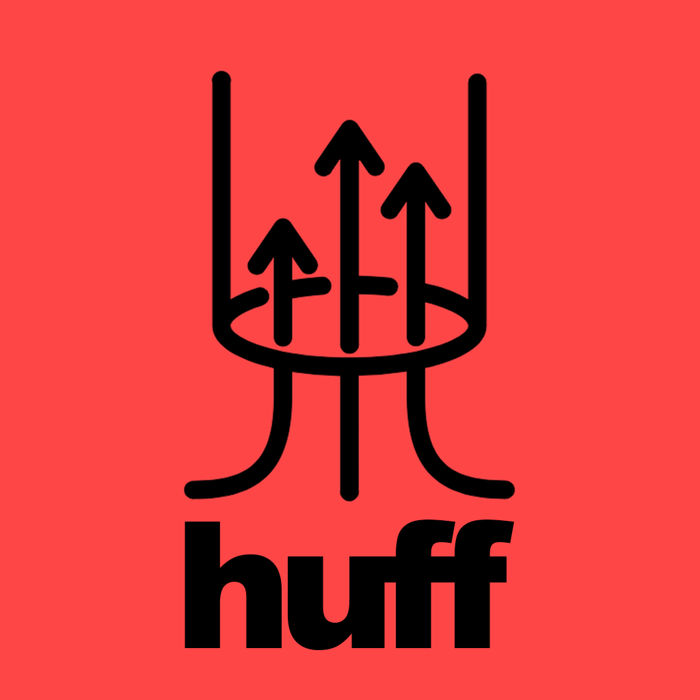

Tauri · p5.js · Rust · Syphon · Spout · MIDI · OSC
huff is a desktop application for creating real-time datamosh, glitch-art, and feedback effects. Load a video file or connect a webcam, then sculpt the image through a live effect chain — datamosh tile displacement, feedback loops, flow warps, symmetry folds, solarise, scanline corruption, and ghost trails.
It ships with a two-window architecture: a controls panel and a separate fullscreen output window that receives the processed frames over a local WebSocket relay. The output window can be recorded, mirrored to a projector, or shared directly to VJ software via Syphon (macOS) or Spout (Windows).
huff is built for performers and artists who want a tool that behaves predictably under pressure — MIDI-mappable, OSC-receivable, and hot-swappable mid-set.
Replace with: screenshot of the full app in use, ideally during a live performance
Features
- Datamosh / glitch tiles — temporal tile displacement sampled from a 60-frame ring buffer with cluster physics, spatial gap, smear, and depth scatter
- Feedback loop — zoom, translate X/Y, and rotate the buffer back onto itself each frame
- Flow warp — noise-field optical-flow UV distortion with pulse and implosion modes
- Symmetry — vertical, horizontal, or both axes with a moveable split position
- Solarise — luminance-threshold colour inversion with per-channel R/G/B tinting
- Scanline bands — drifting horizontal displacement bands sampled from past frames with gap quantisation and skew
- Trails — stacked ghost frames with luma keying for motion-smear
- Camera input — live webcam feed alongside or instead of video files
- Syphon (macOS) — zero-install Metal texture sharing to Resolume, VDMX, MadMapper, CoGe, and any Syphon receiver
- Spout (Windows) — D3D11 texture sharing to Resolume Arena, TouchDesigner, MadMapper, and any Spout2 receiver
- MIDI — full CC/note input via native Rust
midir; JSON map files; hardware + virtual ports - OSC — UDP listener on port 9000; JSON map files; TouchOSC, Max/MSP, Pure Data, SuperCollider, TouchDesigner
- Presets — save/recall named parameter snapshots; 7 factory presets included
- Keyboard shortcuts —
Ptoggles controls panel,Ftoggles output fullscreen
Quick Start
# 1. Download from Releases, or build from source:
git clone https://github.com/your-org/huff.git
cd huff && npm install && npm run dev
# 2. Load a video file or start your webcam in the Source group
# 3. Enable Glitch — move CORRUPT % above 0
# 4. Open canvas.html in a second monitor window → press F for fullscreen
Documentation
| Section | What’s covered |
|---|---|
| How it Works | Effect pipeline, data flow diagrams, frame output architecture |
| Installation | macOS DMG, Windows installer, build from source |
| The Interface | Every control group, every parameter explained |
| MIDI | Connecting devices, map format, virtual ports |
| OSC | Setup, map format, TouchOSC, Max/MSP, TouchDesigner |
| Video Output | Syphon, Spout, canvas mirror window |
| Parameter Reference | Complete ID/range table for MIDI + OSC maps |
| Architecture | File structure, Rust internals, WebSocket relay |
| Caveats | Known limitations, platform notes, edge cases |
| Troubleshooting | Common problems and fixes |